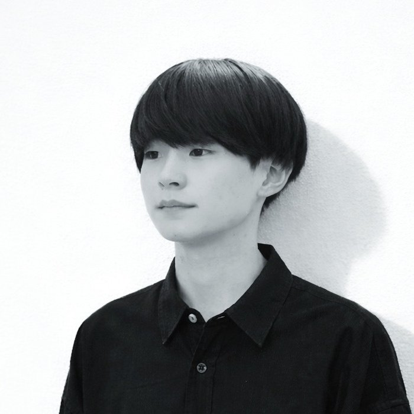

PORT
FOLIO
Designing
Digital
Experience.
KATSUYA HYODO — Web Designer
Scroll
Selected Works
About Me

KATSUYA HYODO
兵頭 克弥
愛媛県出身。大学卒業後は不動産会社にて新規顧客開拓に従事しました。その後、自分の興味や適性を見つめ直し、以前から関心のあったWebデザインの分野に挑戦することを決意しました。HTML/CSSを独学で学び、デザイン会社に入社しました。約８年間、Webデザイナーとして主にWebサイト制作に携わり、構成設計からデザイン、コーディング、公開後の更新管理まで一貫して担当してきました。デザインと実装の両方を経験しているため、実装や運用を見据えた設計ができることが強みです。退職を機に岡山県で働きたいと考え、これまでの経験を活かしながら、地域で長くWeb制作に携わっていきたいと考えています。
SKILL
デザイン：Illustrator / Photoshop / Adobe XD
コーディング：HTML / CSS / JavaScript
CMS / Movabletype / HeartCore
EC：futureshop / EC CUBE / Rakuten)
チャットツール：Slack / ChatWork